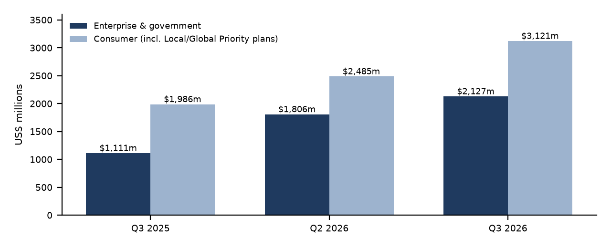
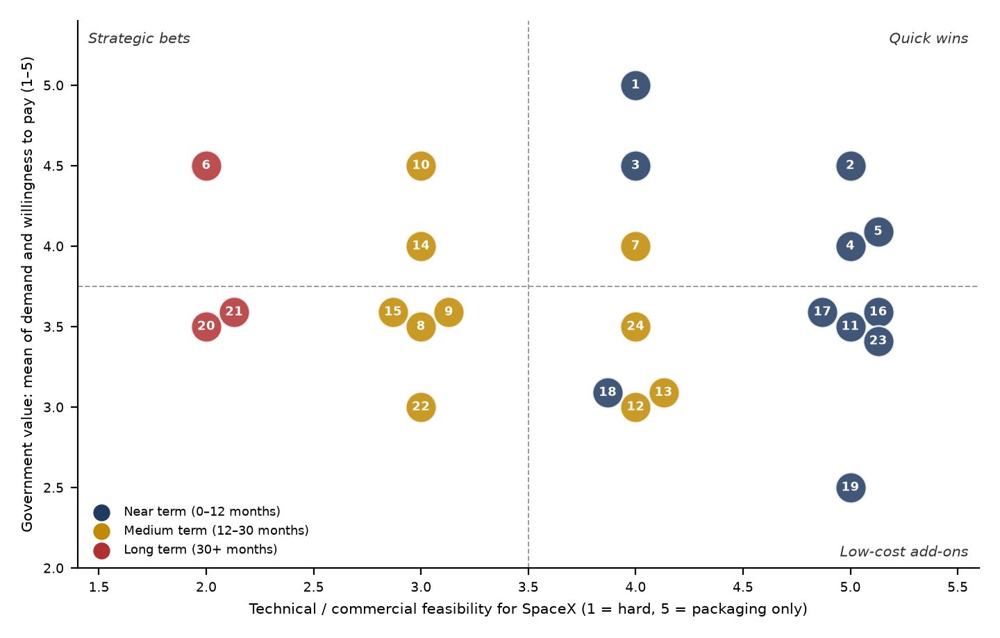

Augmented Starlink for Government: Premium Features for Public Safety, Emergency Response, Digital Resilience and Continuity of Government
Current Starlink/Starshield government baseline · public-sector requirements and pain points · 24-feature premium catalogue benchmarked against OneWeb, Amazon Leo, SES, Viasat/Inmarsat, Iridium, Telesat, IRIS², AST/FirstNet, Lynk and Skylo · demand signals · prioritised roadmap | Status as of November 18, 2026
Prepared for Paul. Citations in square brackets are clickable and map to the numbered References. How to read this report: Sections 1–3 describe what exists today and are sourced facts. Sections 4–6 are analysis and recommendations — the proposed features are not SpaceX products or plans unless a source says so. Scores, price tiers and market estimates in those sections are this report’s own judgement and are labelled as such. Items marked [UNVERIFIED] rely only on press reports. Press sources are labelled in the References.
Executive summary
- Government is already Starlink’s fastest-growing revenue line. SpaceX reported enterprise & government revenue of $2,127m in Q3 2026, up 91% year on year, and $5,042m for the first nine months, against $3,121m of consumer revenue in the quarter [1]. The DoD’s PLEO satellite-services IDIQ ceiling went from $900m to $13bn [19], and SpaceX’s own PLEO vehicle shows $486.8m obligated across 13 orders [15].
- Today’s civil-government offer is the commercial business offer. Civil agencies buy Starlink Local/Global Priority plans, often through the GSA schedule (MAS 47QRAA21D007N) [14]. Those plans carry a 99.9% availability SLA whose sole remedy is a 20% service credit, measured only as loss of reachability to a Starlink PoP, and excluded for Mini kits and data pools [4,3]. SpaceX positions Starlink as the “recommended product” for civil, state and local government and Starshield for military end uses [26].
- The gaps public-safety buyers name are mostly contractual and governance gaps, not bandwidth. These buyers are used to CISA priority services: GETS completes 98% of calls under congestion, WPS 95%, and TSP gives restoration priority to registered circuits [72,73,74]. Starlink has no published NS/EP priority class, no restoration-priority scheme and no agency-facing outage reporting comparable to FCC NORS duties [80]. Sovereignty and control worries — the Crimea geofencing episode [63], Italy’s stalled €1.5bn deal [67], Ontario’s cancelled C$100m contract [68] — and the 2.5-hour global software outage of July 24, 2025, which also hit Starshield users [64,26], are the main objections.
- Competitors are selling exactly these premiums. FirstNet’s satellite service with AST SpaceMobile is planned for 2027 and promises Band 14 priority/pre-emption and mission-critical push-to-talk [36]. SES sells sovereign gateways with a 99.5% satellite-availability SLA [44]. France’s CENTAURE call-off buys dedicated OneWeb LEO capacity plus a security upgrade of OneWeb services as a bridge to IRIS² (€138m firm over 4 years, ~€350m over up to 8 years) [45]. Amazon Leo offers Direct-to-AWS private networking [48]. The EU’s proposed Critical Communication System would require members to use GOVSATCOM/IRIS² as satellite back-up [99].
- Top recommended premium features (own ranking, by demand × willingness to pay, then feasibility; full scoring in Section 4):
Rank | Feature (catalogue #) | Why it ranks here |
|---|---|---|
1 | NS/EP priority & pre-emption tier (#1) | A WPS/GETS-style admission and scheduling class above commercial Priority, tied to CISA eligibility. It closes the single biggest gap versus FirstNet Band 14. Feasibility: high, because Starlink already ranks Priority over Residential/Roam traffic [10]. |
2 | Government SLA+ with real remedies (#2) | 99.95–99.99% per-site targets with geographic diversity, mean-time-to-restore, latency and throughput floors, and credits above 20%. This is a contract change, not an engineering one. |
3 | Disaster surge pool / “disaster mode” (#3) | Pre-paid standby lines and data that switch on when ESF-2, DIRS or a state emergency is declared. It turns ad hoc goodwill, like Helene [53,54], into a budgetable retainer. |
4 | Continuity & control charter (#10) | Contractual no-unilateral-geofencing and notice terms, plus customer-run allow-listing on the Ukraine model [12,59]. Allied and EU buyers rate this highest. |
5 | Government private network (#7) | Pre-certified Private Network Interconnects into agency data centres, state networks such as Cal OES CAPSNET, the FirstNet core and GovCloud. It builds on the existing PNI product [6,85] and matches Amazon’s D2A [48]. |
6 | Pre-positioned kit cache & 24-hour logistics (#4) | Vendor-managed inventory at state warehouses with pre-provisioned activation. FirstNet already advertises a fleet of 190+ deployables [36]. |
7 | Restoration priority, a TSP-equivalent (#5) | Priority RMA, support and capacity restoration for registered NS/EP lines. It plugs into a CISA process agencies already use [74]. |
8 | Sovereign gateway & data residency (#6) | In-country gateways and PoPs, national ops staff and no out-of-country routing. This is the price of entry in the EU and allied markets, where SES and OneWeb already offer it [44,45]. |
9 | Direct to Cell for responders (#14) | Priority SMS and data lanes, guaranteed WEA/cell-broadcast relay, and responder groups. It builds on T-Satellite’s 911 and WEA service [27,29] and Motorola APX NEXT integration [31]. |
10 | PSAP/911 and COOP standby bundles (#16, #17) | Packaged dual-path back-up for the 5,324 US PSAPs [86] and for continuity sites. Business accounts currently cannot use Standby Mode [16]. |
- Enablers rather than revenue lines: a FedRAMP/StateRAMP-authorised management portal (#9). No Starlink or SpaceX offering appears in GSA’s FedRAMP Marketplace dataset, last updated May 19, 2026 (own check), while partners such as Motorola already hold FedRAMP High [31]. The other enabler is an outage-transparency dashboard and API (#11).
- Long-term bets: LEO PNT back-up (#20), where SpaceX withdrew user location access in May 2026 [UNVERIFIED: press only] [70] and Iridium already sells PNT [40], and an anti-jam assurance tier (#21). Both are strategically valuable but hard, and largely Starshield territory.
1. The current Starlink government baseline (facts)
1.1 Commercial plans and hardware sold to civil government
Element | What exists today | Government gap |
|---|---|---|
Plan priority ladder | Priority data takes precedence over Residential and Roam. Residential Lite is deprioritised during congestion [10,11]. | Responders on Residential or Roam lines share capacity with consumers during disasters. |
Local / Global Priority (US list prices) | Local: 50 GB $55 → 2 TB $530 per month. Global: 50 GB $250 → 2 TB $2,150 per month. Above the allowance, speed falls to 1 Mbps down / 0.5 Mbps up. Standby Mode is not available to Business accounts [16]. Local Priority prices vary by country, e.g. CAD 94 for 50 GB in Canada and EUR 49 in Germany [3]. | Priority data works out at $0.27–1.10/GB (Local) and $1.08–5.00/GB (Global), own arithmetic from list prices [16]. There is no cheap “warm standby” option for continuity sites. |
SLA | 99.9% monthly network availability per line. An outage is 60 s or more without reaching a Starlink PoP. The credit is 20% of the line’s base cost and is the sole and exclusive remedy. The SLA covers Available cells only and excludes data pools and Mini kits [4,3]. Priority-plan support is a 24/7 ticket queue [5]. | No throughput or latency guarantee, no restoration time and no multi-site diversity commitment. |
Hardware | Performance Kit: −40 °C to 60 °C, IP68/IP69K, survives 280 kph+ winds, 75–100 W, AC/DC supply with battery input, 10-year design life [7]. Flat High Performance: IP56, −30 °C to 50 °C, 110–150 W [8]. Mini: 1.10 kg, 25–40 W, 12–48 V DC, IP67, up to 128 devices [9]. | Hardware is already field-grade. The gaps are in service terms and integration. |
Private networking | Private Network Interconnects at Starlink PoPs, layer 2 or layer 3 [6]. On the default service, Cisco engineers observe CGNAT, exit-PoP routing that is static per terminal, and network changes that are “frequent and unannounced”. IPsec with NAT-T is the usual workaround [17,18]. | Agencies want predictable routing, in-country exit and direct links to their own networks. |
Procurement | GSA MAS contract 47QRAA21D007N runs to Jul 8, 2031 (option period), with an ultimate end date of Jul 8, 2041 [14]. Starlink is described as the recommended product for civil, state and local agencies, and Starshield for military end uses [26]. | An easy route for federal, state and local buyers, but on commercial terms. |
1.2 Starshield and the DoD PLEO channel
- Starshield covers Earth observation, “assured” communications and hosted payloads, and adds “high-assurance cryptographic capability” to Starlink’s link encryption [2]. Space Systems Command says CSCO buys Starshield access “over the Starlink Satellites/network”, and the July 2025 Starlink outage also took down Starshield service [26]. CSCO’s head said in 2024 that DoD users are on the commercial constellation under “unique service plans that contain privileged capabilities and features that are not available commercially” [26]. That is a precedent for government-only tiers on the shared network.
- PLEO IDIQ (DISA/CSCO, now moving to Space Force): the ceiling rose from $900m to a projected $13bn [19,20]. SpaceX’s vehicle HC101323D9000 shows $486.8m obligated ($996.6m potential) across 13 orders, with ordering to Jul 17, 2033. The orders include “Best effort subscription & terminals – Ukraine” ($138.1m), “SBS003512 best effort” ($198.6m) and aero tile terminals [15]. Note that the largest orders are labelled best effort. Viasat holds a $3.5m task order on the same IDIQ [21].
- Government-owned constellations built by SpaceX: MILNET, “480-plus” satellites operated by SpaceX under Space Force oversight [UNVERIFIED: press only] [22]. A $2.29bn Space Data Network Backbone OTA awarded in May 2026, with a prototype due by end-2027 [25]. SDA Tracking Layer Tranche 0 ($149,175,246) [23]. A reported $1.8bn NRO contract [UNVERIFIED: press only] [24].
- Accreditations: no public FedRAMP authorisation or DoD Impact Level provisional authorisation for Starlink or Starshield was found. There is no Starlink or SpaceX entry in GSA’s FedRAMP Marketplace dataset (last updated May 19, 2026; own check of the GSA data file). Treat any reseller claim of “FedRAMP compliance” as unverified until it is listed.
1.3 Direct to Cell, FirstNet and the disaster-response record
- T-Satellite (Starlink Direct to Cell): texting, location sharing and Text-to-911 with automatic location, and Wireless Emergency Alerts. T-Mobile Text to 911 via satellite is free to anyone with an eligible phone, including non-T-Mobile users [27,28]. During Winter Storm Fern it served 250,000+ users, 1.5m+ messages and 100+ WEAs [29]. Ahead of Hurricane Lala in Hawaii it carried about 29,000 texts and relayed WEAs regardless of carrier [30].
- Starlink Mobile abroad: Kyivstar offers it free to about 15.5m 4G users in Ukraine. More than 11m unique VEON customers have connected across Ukraine, Kazakhstan (launched with the national digital ministry) and Bangladesh. The D2C layer has 650 satellites [33]. Next-generation capacity rests on EchoStar’s AWS-4/H-block spectrum (deal of up to about $17bn, FCC-approved) [34,35] and a new 800 MHz licence deal expected to close in H1 2027 [1].
- Public-safety integration: Motorola’s APX NEXT radios now fail over from LMR to T-Satellite, and use T-Priority (“up to five times greater network priority”) [31,32]. Cal OES is deploying Cradlepoint dual-WAN LTE+Starlink as interim backhaul to CAPSNET for new radio sites, with live use from H1 2027 [85].
- FirstNet is not Starlink. AT&T’s FirstNet Satellite uses AST SpaceMobile and is planned for 2027 in the contiguous US, with Band 14 priority/pre-emption and MCPTT. FirstNet already uses Starlink, OneWeb, Viasat, Amazon Leo and Inmarsat for its deployables, including the 190+ asset Response Operations Group fleet [36,37].
- Disasters and conflict:
- – Helene (2024): FEMA provided 40 Starlink systems, with more shipping, one per county EOC [53]. Starlink waived service fees through end-2024 in Helene and Milton areas [UNVERIFIED: press only] [54].
- – Maui (2023): about 500 terminals were in use by late August [UNVERIFIED: press only] [58].
- – Noto, Japan (2024): KDDI and Starlink supplied 350 units to shelters and about 700 in total, including backhaul for vehicle, portable and ship-borne base stations [57].
- – Ukraine: since Feb 4, 2026 every terminal must be on a government whitelist, and Russian terminals are blocked [12,59]. Poland funds more than 29,000 terminals [UNVERIFIED: press only] [60].
- – State Department MOU (Jun 2026): a two-year disaster-response MOU with Starlink, coordinated by the Bureau of Disaster and Humanitarian Response [55]. Under it, hundreds of kits were flown to Colombia after its earthquake [56].

Figure 1 – SpaceX Connectivity revenue by customer type, US$ millions. Enterprise & government grew 91% year on year. Consumer includes Local/Global Priority business plans; enterprise & government is managed contracts in aviation, maritime, land mobility, fixed sites and government [1].
2. What governments require and where Starlink falls short
Source | What it requires or shows | Starlink gap |
|---|---|---|
CISA priority services (US) | GETS completes 98% of calls and WPS 95% under congestion. Neither pre-empts calls in progress [72,73]. TSP restoration priority must be registered before an outage [74]. About 10m users [76]. NGN-PS Phase 2 aims to extend priority to data, video and cloud across cellular, Wi-Fi and satellite [75]. | No published NS/EP class, restoration-priority process or CISA integration. |
FCC outage and disaster rules (US) | Satellite operators must notify the FCC within 120 minutes of a 30-minute outage, file an initial report in 72 hours and a final one in 30 days [80,79]. DIRS reporting is voluntary for satellite providers [81]. MDRI requires mobile carriers to arrange disaster roaming and mutual aid [82]. Interim 911 rules apply to supplemental coverage from space [83]. | NORS data is confidential to the FCC. Agencies get no feed of outages that affect their own lines. |
SAFECOM / NCSWIC, NECP (US) | PACE (primary, alternate, contingency, emergency) planning and resilient, secure systems [77,78]. | Starlink is usually the “A” or “C” path. Buyers need it to be documented, testable and diverse. |
NPSTC user survey (US) | 94.7% of agencies say direct device-to-device voice is important. AES-256 is the dominant voice encryption [84]. | Satellite cannot replace direct-mode radio. It needs LMR bridging and end-to-end encryption. |
3GPP MCX | TS 23.289 (Rel-19) lets MCPTT, MCVideo and MCData run over non-3GPP access including satellite [94]. | There is a standards path, but no certified Starlink MCX profile. |
EU | The EUCCS proposal (€3.571bn of public investment; Member States connect from 2030) requires satellite back-up via GOVSATCOM/IRIS², including direct-to-device [98,99]. GOVSATCOM is operational [52]. BEREC’s resilience-workshop summary records satellite connections for critical infrastructure and emergency restoration among national resilience measures [96], and flags NTN interoperability and cybersecurity in its 2026–30 strategy [95]. | A sovereignty preference is being written into law. Starlink will need sovereign packaging or a GOVSATCOM-compatible role. |
EU tenders now | Estonia’s Starlink service framework (36 months, €600k estimate, €1m cap) [100]. Lithuania’s border-guard satcom [101]. BEREC’s €186,860 crisis-comms tender [97]. France awarded a sovereign LEO/GEO patrol-vessel service [102]. | Demand exists, and some buyers specify sovereignty. |
UK ESN | Whole-life budget £19.1bn to 2043/44, with £6.1bn spent [103]. Full voice service targeted for March 2028. Rapid-response vehicles already use LEO links [104]. | Back-up and gap-fill role. Needs mission-critical QoS and integration with the Home Office. |
Australia | The Optus outage of Sep 18, 2025 lasted about 14 hours: 605 Triple Zero callers, only 150 connected, two fatalities [105]. A Triple Zero law review is under way [106]. STAND put NBN Sky Muster (GEO) links at 1,068 emergency sites, with up to A$14m for up to 500 more [107]. The UOMO counts satellite-to-phone coverage [108]. | Shows the value of a 000/911 back-up path. STAND is a GEO incumbent that LEO could displace. |
2.1 Pain points specific to Starlink
- Sovereignty and control.
- – Isaacson’s biography first said Musk switched off coverage near Crimea, then corrected this: the area was already geofenced and Musk refused to enable it [63,62].
- – Poland, which pays for Ukraine’s service, publicly threatened to switch providers [UNVERIFIED: press only] [61].
- – Italy’s €1.5bn secure-comms deal stalled over sovereignty [UNVERIFIED: press only] [67].
- – Ontario cancelled a C$100m contract for political reasons [UNVERIFIED: press only] [68].
- – The Ukraine whitelist [12,59] shows the reverse model: the government decides which terminals work.
- Concentration and resilience. The Jul 24, 2025 outage lasted about 2.5 hours and was blamed on core-network software [UNVERIFIED: press only] [64,65]. It hit Ukraine’s military communications [66] and Starshield [26]. A single shared core is a single point of failure for agencies that treat Starlink as their back-up.
- No meaningful SLA remedy. A 20% credit as the sole remedy [4] does not cover the costs of an EOC or PSAP outage.
- Contention. Consumer, Roam and Lite plans are deprioritised [10]. Responders who bought consumer kits locally, which is common after disasters, lose out at exactly the wrong time.
- Data jurisdiction and routing. A US provider is subject to the CLOUD Act [93]. Ukraine’s traffic exits via gateways in Poland and Lithuania [17]. Buyers in the EU, Canada and Asia want in-country exit and in-country operations staff.
- Integration. Integration with LMR/P25/TETRA, MCX, NG911 ESInets and agency SD-WAN is left to partners such as Motorola, Cradlepoint and Cisco [32,85,18].
- Cost of Priority data for surge use: Global Priority works out at $1.08–5.00/GB (own arithmetic) [16].
3. Premium feature catalogue (analysis — proposed, not existing products)
Columns 4 and 5 are facts with sources. Everything else is this report’s analysis. Value tier (own estimate): A = should be bundled at no or low extra cost (+0–10%); B = paid add-on (+10–30% on line price); C = premium tier (+30–100%); D = bespoke government contract (typically ≥$1m a year). Feasibility (own judgement): 5 = contract or packaging only; 3 = new software or certification; 1 = new space or ground hardware. D/W/F = demand, willingness to pay and feasibility scores (1–5) used in Figure 2.
# | Feature and what is new | Main buyers | Exists today (Starlink) | Comparable competitor offers | Value tier* | Feas.* | D/W/F* |
|---|---|---|---|---|---|---|---|
1 | NS/EP priority & pre-emption tier: an admission and scheduling class above commercial Priority, with capacity reservation in declared areas and optional pre-emption of Lite/Roam traffic | Federal NS/EP, state and local responders, EOCs | Priority > Residential > Lite [10]. DoD “privileged” plans exist [26] | FirstNet Band 14 priority/pre-emption [36]. WPS/GETS [73,72]. T-Priority [31] | C | 4 | 5/5/4 |
2 | Government SLA+: per-site 99.95–99.99% with diverse-path design, MTTR, throughput and latency floors, credits of 25–100% and step-in rights | All agencies | 99.9%, 20% credit as sole remedy, no Mini or pools [4] | SES 99.5% satellite availability on committed capacity [44] | B | 5 | 5/4/5 |
3 | Disaster surge pool: pre-paid standby lines and pooled Priority data that switch on automatically when ESF-2, DIRS or a state declaration is triggered | FEMA, state EMAs, utilities | Ad hoc free service [54]. State Department disaster MOU [55]. No standby for business accounts [16] | FirstNet ROG deployables at no extra cost [36] | B | 4 | 5/4/4 |
4 | Pre-positioned kit cache & 24h logistics: vendor-managed inventory at state warehouses, pre-provisioned activation, generators and mounts | State EMAs, FEMA regions, NGOs | FEMA shipped kits after Helene [53]. Resellers sell kits | AT&T/FirstNet 190+ deployables [36] | A/B | 5 | 4/4/5 |
5 | Restoration priority (TSP-equivalent): NS/EP-registered lines get priority RMA, support and capacity restoration | Federal, state and local agencies, critical infrastructure | 24/7 ticket queue [5] | CISA TSP on terrestrial carriers [74] | A | 5 | 4/4/5 |
6 | Sovereign gateway & data residency: in-country gateways and PoPs, traffic kept in-country, operations by nationals with clearances, audit rights | EU, UK, Canada, Japan, Australia, Gulf | Country gateways exist, but routing is opaque [17] | SES sovereign gateways [44]. OneWeb CENTAURE [45]. IRIS² [51]. Telesat ESCP-P [46] | D | 2 | 4/5/2 |
7 | Government private network: pre-certified PNI into agency data centres, state WANs, the FirstNet core, AWS GovCloud and Azure Government, plus TIC 3.0 patterns | Federal civilian, state CIOs | Amazon Leo Direct-to-AWS and PNI [48] | B | 4 | 4/4/4 | |
8 | Bring-your-own-key / CSfC-ready configurations: published reference designs (dual-layer VPN), FIPS-validated terminal crypto, key custody options | Federal, defence-adjacent, justice | Link encryption. Starshield high-assurance crypto [2] | Inmarsat/Viasat government services [21] | B/C | 3 | 3/4/3 |
9 | FedRAMP/StateRAMP-authorised portal: role-based access, audit logs, SIEM export | Federal and state CIOs | Not listed in FedRAMP Marketplace data (own check) | Motorola FedRAMP High [31] | A (enabler) | 3 | 4/3/3 |
10 | Continuity & control charter: no unilateral geofencing, notice periods, escrowed continuity, customer-run allow-lists and geofences | Allies, EU, Ukraine-type users | C/D | 3 | 5/4/3 | ||
11 | Outage transparency and ops APIs: per-agency outage feed (NORS-like), root-cause reports, health APIs | All agencies | SLA outage table. FCC NORS duties [80] | Viasat 24/7 NOC with real-time tools [21] | A | 5 | 4/3/5 |
12 | Multi-orbit / multi-bearer failover bundle: certified bonding with GEO/MEO, OneWeb and cellular under one SLA | Critical sites, EOCs | Viasat NexusWave bonded GX+LEO+LTE+L-band [42]. Viasat multi-orbit PLEO offer [21] | B | 4 | 3/3/4 | |
13 | Deployable cell (COW/COLT) kit: Starlink backhaul plus small cell, Band 14-ready, power | Carriers, states, militaries | KDDI vehicle and ship base stations [57] | AT&T SatCOLTs [36] | B/C | 4 | 3/3/4 |
14 | Direct to Cell for responders: priority SMS and data lane, guaranteed WEA/cell-broadcast relay, talk groups, IoT | Public warning authorities, responders | FirstNet/AST 2027 [36]. Lynk cell broadcast [39]. Skylo/Verizon Frontline [38] | B | 3 | 4/4/3 | |
15 | LMR/P25/TETRA bridge & MCPTT certification: ISSI/CSSI gateways, MCX QoS profiles, encryption pass-through | Radio system owners | 3GPP MCX over satellite [94] | B | 3 | 4/3/3 | |
16 | PSAP/911 back-up package: dual-path link to the NG911 ESInet, pre-tested failover, monthly test reports | 5,324 US PSAPs [86]. 000/999/112 centres | Generic business plans | Carrier diverse circuits. Optus lesson [105] | A/B | 5 | 4/3/5 |
17 | COOP standby bundle: low-fee “warm standby” lines for alternate sites, quarterly exercise credits | Federal and state COOP sites | No Standby for business [16] | — | A | 5 | 4/3/5 |
18 | Critical-infrastructure OT package: low-rate always-on plans, static IP or PNI, NERC-CIP and AWIA documentation | Utilities, water, pipelines | PNI [6] | SES and Viasat enterprise | B | 4 | 3/3/4 |
19 | Telemedicine / field-hospital package: HIPAA BAA, medical QoS, DMAT kits | Health agencies, DMAT | KDDI–DMAT use [57] | — | A/B | 5 | 3/2/5 |
20 | LEO PNT / timing back-up: authenticated timing and positioning service | DOT, utilities, telecom | User location access removed [UNVERIFIED: press only] [70] | C | 2 | 3/4/2 | |
21 | Anti-jam / anti-spoof assurance: jamming detection and reporting, hardened firmware, EW alerts | Border, defence-adjacent | Countered Russian jamming via a software update [UNVERIFIED: press only] [69] | Starshield. Military Ka (Telesat ESCP-P) [46] | C | 2 | 3/4/2 |
22 | Situational-awareness / IoT data service: sensor and drone backhaul, D2C IoT, a data broker for wildfire and flood gauges | EMAs, forestry, hydrology | D2C IoT planned for LTE CAT-1 [13] | B | 3 | 3/3/3 | |
23 | Cleared 24/7 government desk, training & exercises: named TAMs, US-person or national staff | All agencies | 24/7 ticketing [5] | Viasat 24/7 [21] | A | 5 | 4/3/5 |
24 | Aerial firefighting / SAR aero package: aero terminals with government priority | Fire aviation, coast guards | Viasat Velaris (UAV C2) [43] | C | 4 | 3/4/4 |

Figure 2 – Prioritisation matrix for the 24 candidate features (own scoring from Section 3). The x-axis is feasibility for SpaceX. The y-axis is the mean of demand and willingness to pay. Numbers match the catalogue. Points in the upper-right are contract and packaging moves that can ship within 12 months.
3.1 Notes on the hardest calls
- Priority vs. pre-emption (#1). WPS and GETS deliberately do not pre-empt calls already in progress [73,72], while FirstNet’s Band 14 offers pre-emption [36]. A Starlink tier should offer admission priority by default and pre-emption as an opt-in per incident, authorised by the agency. That avoids taking capacity from the public at the very moment they need it.
- Control charter (#10) vs. US law. SpaceX remains subject to US export-control and sanctions decisions, so no contract can guarantee service against a US government order. What the charter can offer is: no company-initiated geofencing without notice; customer-run allow-lists; and an escrowed transition plan to a second provider. The Ukraine whitelist [59] is a working template.
- Sovereign gateways (#6). This is expensive per country, and under the EU’s proposed EUCCS rules the satellite back-up role is reserved for GOVSATCOM/IRIS² [99]. The realistic EU play is to be a GOVSATCOM-compatible capacity provider, or to win national (non-EU-funded) budgets such as Estonia’s [100].
4. Market sizing and demand signals
Signal | Amount | Source |
|---|---|---|
SpaceX enterprise & government revenue | $2,127m (Q3 2026), +91% y/y; $5,042m in 9M 2026 | Official [1] |
DoD PLEO IDIQ ceiling / SpaceX obligations | $13bn ceiling to Jul 2033 / $486.8m obligated (13 orders) | |
Space Data Network Backbone (SpaceX) | $2.29bn OTA; prototype by end-2027 | [25] trade press |
NRO Starshield constellation | $1.8bn (2021) [UNVERIFIED: press only] | [24] |
Canada ESCP-P (Telesat Lightspeed) | C$2.3bn initial + C$214m and C$218m options | Official [46] |
France CENTAURE (Eutelsat OneWeb) | €138m firm for 4 years; ~€350m up to 8 years | [45] trade press |
FEMA Disaster Relief Fund FY2026 | $26.367bn (no public line for communications) | Official [89] |
FirstNet Authority FY2026 budget | $867.1m, of which $735.0m Reinvestment in Network Enhancement | Official [88] |
US 911/E911 fees (2022) and PSAPs | $3.85bn collected; 4,627 primary + 697 secondary PSAPs | Official [86] |
BEAD satellite awards | ~$1bn to SpaceX and Amazon Leo (trade press estimate) | |
EU Critical Communication System | €3.571bn of public investment; connection from 2030 | |
UK ESN | £19.1bn whole life; £6.1bn spent | Official [103] |
Australia STAND | 1,068 sites; up to A$14m for extension and +500 sites | Official [107] |
Estonia Starlink framework / BEREC crisis comms | €600k est. (€1m cap) / €186,860 | |
Italy secure comms (stalled) / Ontario (cancelled) | €1.5bn / C$100m [UNVERIFIED: press only] |
Own estimate (clearly labelled): what US state and local site back-up is worth Sites: 5,324 PSAPs [86] + 27,166 registered fire departments [87] = 32,490 sites. At list price: one Local Priority 500 GB line ($155 a month, $1,860 a year [16]) per site ≈ $60m a year. With a +50% government-premium tier (SLA+, priority, restoration) ≈ $91m a year. In context: that is about 1% of SpaceX’s annualised enterprise & government revenue (Q3 2026 × 4 ≈ $8.5bn [1]). The lesson is that state and local volume matters for coverage and reputation. The money in premium features comes from (a) federal and defence plans with privileged features (PLEO), (b) sovereign or allied national contracts (€100m–C$2bn scale, see the table) and (c) D2C public-warning and responder services sold through carriers. Excluded: police stations, EOCs, hospitals, schools and utilities, because no single official site count was found. Including them would raise the site count, not the conclusion. |
5. Prioritised roadmap and risks (recommendations)
Horizon | Features (catalogue #) | Notes |
|---|---|---|
Near term, 0–12 months: packaging and contracts | #1 NS/EP tier (admission priority first). #2 SLA+. #3 surge pool. #4 kit caches. #5 restoration priority. #11 outage feed. #16 PSAP and #17 COOP bundles. #23 cleared support desk. #19 health package | Mostly contract, billing and operations. Register as a CISA priority-services partner [71]. Offer through GSA [14] and state cooperative contracts. |
Medium term, 12–30 months: network features | #7 government private network. #9 FedRAMP portal. #8 BYOK/CSfC. #10 control charter. #14 D2C responder features (after the EchoStar spectrum transfer [35]). #15 MCX/LMR certification. #12 multi-orbit bundle. #13 COLT kit. #22 IoT. #24 aero | Needs authorisation packages, partner certification (Motorola, Cradlepoint, Cisco) and MNO agreements. |
Long term, 30+ months: new capabilities | #6 sovereign gateways with national operations. #20 PNT. #21 anti-jam tier. Integrated MCX over D2C | Capex and regulation. Watch IRIS² (service from about 2030) [51] and EUCCS (2030) [98]. |
5.1 Risks
- Regulatory.
- – An NS/EP class on a shared network may draw FCC or NTIA attention to fairness toward consumers. Satellite outage reporting already applies [80]. SCS 911 rules are interim [83].
- – In the EU, the EUCCS proposal would steer back-up to GOVSATCOM/IRIS² [99].
- Sovereignty. The Crimea, Italy, Ontario and Poland episodes [63,67,68,61] mean that features #6 and #10 are prerequisites for selling outside the US. They are not optional extras.
- Competition.
- – FirstNet/AST (2027) owns the US responder brand and Band 14 [36,37].
- – Amazon Leo is entering service “within weeks”, with nearly 400 satellites in orbit [UNVERIFIED: press only] [50]. It has a government page and Army demonstrations [47,49] and AWS-native private networking [48].
- – OneWeb, SES and Telesat win sovereign deals [45,44,46].
- – IRIS² is the EU’s preferred long-term option [51].
- Concentration. Agencies may cap Starlink’s share of their resilience architecture after the July 2025 outage [64,26]. A multi-orbit bundle (#12) turns that risk into a sale.
- Dual-use perception. Mixing Starshield and Starlink makes civil users wary of being seen as military targets [26]. Separate civil-government branding and governance would help.
References
All 108 reference URLs were checked with curl (redirects followed) on Nov 18, 2026. Unless flagged, each returned HTTP 200. No reference returned 404. Press sources are labelled. Access-blocked pages (HTTP 401/403/202 or timeouts) are noted and were confirmed through search results or a browser-style fetch.
[1] SpaceX, “SpaceX Reports Third Quarter 2026 Results” (Exhibit 99.1 to Form 8-K, SEC EDGAR)
[2] SpaceX, “Starshield – Secured satellite network for government entities”
[4] Starlink Help Center, “What is the Starlink Service Level Agreement?” — Note: starlink.com page is JavaScript-rendered; curl returns HTTP 200 with an empty shell, so the text was read through a search-engine index on Nov 18, 2026.
[5] Starlink Help Centre, “Enterprise Support” — Note: starlink.com page is JavaScript-rendered; curl returns HTTP 200 with an empty shell, so the text was read through a search-engine index on Nov 18, 2026.
[6] Starlink Business, “Private Networking” — Note: starlink.com page is JavaScript-rendered; curl returns HTTP 200 with an empty shell, so the text was read through a search-engine index on Nov 18, 2026.
[7] Starlink, Performance Kit specifications (PDF)
[8] Starlink, Flat High Performance Kit specifications (PDF)
[9] Starlink, Mini Kit specifications (PDF)
[10] Starlink, Fair Use Policy (legal document DOC-1722-29027-68) — Note: starlink.com page is JavaScript-rendered; curl returns HTTP 200 with an empty shell, so the text was read through a search-engine index on Nov 18, 2026.
[11] Starlink, Service Plan Descriptions (legal document DOC-1728-44881-79) — Note: starlink.com page is JavaScript-rendered; curl returns HTTP 200 with an empty shell, so the text was read through a search-engine index on Nov 18, 2026.
[12] Starlink Help Center, “Update on Starlink Service in Ukraine | February 4, 2026” — Note: starlink.com page is JavaScript-rendered; curl returns HTTP 200 with an empty shell, so the text was read through a search-engine index on Nov 18, 2026.
[13] Starlink Business, “Starlink Direct to Cell” — Note: starlink.com page is JavaScript-rendered; curl returns HTTP 200 with an empty shell, so the text was read through a search-engine index on Nov 18, 2026.
[16] We Love Starlink, “Starlink for Business 2026: Local Priority vs Global Priority Plans” (U.S. plan table, updated Nov 13, 2026) — Note: third-party plan tracker; Starlink’s own U.S. business-plans page is JavaScript-rendered and could not be read by script.
[17] Cisco Live 2026, BRKSEC-2173 “Starlink: Advanced Networking” (session slides, PDF) — Note: conference slides by a Cisco engineer describing observed Starlink network behaviour; not a SpaceX document.
[18] Cisco, “Cisco SD-WAN Starlink LEO Satellite” Cisco Validated Design (PDF)
[19] SpaceNews, “Pentagon’s commercial satellite internet services program soars to $13 billion” (Oct 29, 2024) — Note: press.
[20] Breaking Defense, “Space Force ‘transitioning’ SATCOM contracts from DISA” (Mar 2025) — Note: press (interview with Space Systems Command official); returns HTTP 403 to curl, opens in a browser.
[22] Breaking Defense, “Space Force is contracting with SpaceX for new, secretive MILNET SATCOM network” (Jun 2025) — Note: press; returns HTTP 403 to curl, opens in a browser.
[23] Space Development Agency, “SDA Awards Contracts for the First Generation of the Tracking Layer”
[24] Reuters, “Musk’s SpaceX is building spy satellite network for US intelligence agency, sources say” (Mar 16, 2024) — Note: press, anonymous sources; contract never officially confirmed; returns HTTP 401 to curl, opens in a browser.
[25] Air & Space Forces Magazine, “USSF Gives SpaceX $2.29B for New Data Network ‘Backbone’” (May 2026) — Note: trade press; Space Force OTA award.
[26] FedScoop, “SpaceX differentiates between Starlink and Starshield, but the services are intertwined” (Aug 13, 2025) — Note: press, quoting Space Systems Command, Coast Guard and State Department spokespeople.
[27] T-Mobile Support, “T-Satellite support” (Text to 911, WEA, TXT911)
[28] T-Mobile Newsroom, “T-Mobile Text-to-911 Available for Everyone” (Nov 5, 2025)
[30] T-Mobile Newsroom, “T-Mobile Supports Hawaiʻi Through Hurricane Lala…” (updated Aug 22, 2026)
[32] Motorola Solutions, “APX NEXT – LEO Satellite connectivity” fact sheet (PDF)
[34] EchoStar, “EchoStar Announces Spectrum Sale and Commercial Agreement with SpaceX” (Sep 8, 2025) — Note: official release; the EchoStar IR server timed out / reset the connection from our network on Nov 18, 2026.
[35] FCC, “Order Granting SpaceX-EchoStar Applications” (2026)
[36] FirstNet (AT&T), “FirstNet satellite connectivity” – FirstNet Satellite with AST SpaceMobile
[38] Verizon Frontline, “Satellite Connectivity: Mission-Critical Solutions for First Responders” (PDF)
[39] Lynk Global, “Lynk Announces Sat2Phone Contract with U.S. Government” (Apr 24, 2024)
[40] Iridium, “Iridium Announces Commercial Availability of Iridium PNT ASIC…” (Jul 14, 2026)
[42] Viasat/Inmarsat Maritime, “NexusWave” – bonded multi-orbit managed service
[43] Viasat, “Velaris – satellite connectivity for UAVs”
[44] SES, “O3b mPOWER Government Services” brochure (PDF)
[45] Via Satellite, “Eutelsat Secures First Order Under French Defense Agreement” (Jun 16, 2026) — Note: trade press (Eutelsat’s own release page returned HTTP 503 during checking).
[47] Amazon, “Amazon Leo for Government”
[49] Amazon, “U.S. Army C5ISR completes successful demo of Amazon Leo satellite network” (Oct 2026)
[50] Fierce Network, “Amazon Leo on track for year-end service launch despite Vulcan explosion” (Nov 18, 2026) — Note: trade press.
[52] EU Space Policy portal, “GOVSATCOM”
[54] Space.com, “SpaceX makes Starlink internet service free for people hit by hurricanes Helene and Milton” (Oct 2024) — Note: press.
[57] KDDI Newsroom, “スペースXとKDDI、能登半島の避難所にStarlink 350台を無償提供” (Jan 7, 2024) [Japanese]
[58] Hawaii News Now, “Local tech groups got Maui wildfire victims back online after they lost cellular service” (Aug 27, 2023) — Note: local press.
[60] Interfax-Ukraine, “Poland continues to fund operation of over 29,000 Starlink terminals in Ukraine – Fedorov” (2026) — Note: press (quoting Ukraine’s minister).
[61] RBC-Ukraine, “Poland says it will end contract if Musk cuts off Starlink for Ukraine” (Mar 2025) — Note: press.
[62] AP News, “Elon Musk’s refusal to have Starlink support Ukraine attack in Crimea raises questions for Pentagon” (Sep 2023) — Note: press; returns HTTP 403 (bot check) to curl, opens in a browser.
[63] Ars Technica, “Musk refused Ukraine’s request to enable Starlink for drone attack [Updated]” (Sep 2023) — Note: press; Isaacson later corrected the book’s account.
[64] Reuters, “SpaceX probes for cause of Starlink’s global satellite network outage” (Jul 25, 2025) — Note: press; returns HTTP 401 to curl, opens in a browser.
[65] ISPreview, “Starlink Says Global Broadband Outage Caused by Internal Software Failure” (Jul 2025) — Note: trade press.
[66] Reuters, “Ukraine says Starlink’s global outage hit its military communications” (Jul 25, 2025) — Note: press; returns HTTP 401 to curl, opens in a browser.
[67] Reuters, “Italy’s talks with Musk’s Starlink have stalled, minister says” (Mar 22, 2025) — Note: press; returns HTTP 401 to curl, opens in a browser.
[68] CBC News, “Ontario officially cancels $100M Starlink contract, won’t say cost to taxpayers” (2025) — Note: press.
[69] Breaking Defense, “SpaceX beating Russian jamming attack was ‘eyewatering’: DoD official” (Apr 2022) — Note: press (quoting a DoD official); returns HTTP 403 to curl, opens in a browser.
[70] Ars Technica, “Starlink shuts down its GPS-style cheat code. Researchers may unlock it anyway.” (May 2026) — Note: press.
[71] CISA, “Priority Services” (GETS, WPS, TSP)
[72] CISA, “Government Emergency Telecommunications Service (GETS)”
[73] CISA, “Wireless Priority Service (WPS)”
[74] CISA, “Telecommunications Service Priority (TSP)”
[76] Federal News Network, “CISA looks to bring data advances to emergency communications” (Oct 2025) — Note: press interview with CISA official.
[77] CISA, SAFECOM (incl. NCSWIC PACE-plan and P25 user-needs resources)
[78] CISA, “National Emergency Communications Plan”
[79] FCC, “Network Outage Reporting System (NORS)”
[80] eCFR, 47 CFR § 4.9 – Outage reporting requirements, threshold criteria (incl. satellite)
[81] FCC, “Disaster Information Reporting System (DIRS)”
[82] FCC, “Wireless Network Resiliency During Disasters” (Mandatory Disaster Response Initiative)
[83] FCC, “Interim 911 Requirements for Supplemental Coverage from Space”
[84] NPSTC, “Future Spectrum and Technology 2022–2032” report (PDF, Jun 2024)
[85] Cal OES Public Safety Communications, “CRIS Roadmap” (PDF, Jul 2026)
[86] FCC, Fifteenth Annual 911 Fee Report (PDF, 2023)
[87] U.S. Fire Administration, National Fire Department Registry Summary (PDF, Jan 2024)
[88] FirstNet Authority, Board Resolution 120 – Fiscal Year 2026 Budget (PDF)
[91] Broadband Breakfast, “With all BEAD plans approved, states and territories set to spend $18.2 billion on deployment” (Aug 28, 2026) — Note: trade press.
[92] Wireless Estimator, “Did Musk and Bezos hijack BEAD billions? The satellite awards add up to about $1 billion” (Sep 25, 2026) — Note: trade press analysis of state BEAD award data.
[93] U.S. Department of Justice, Criminal Division, “CLOUD Act Resources”
[94] 3GPP TS 23.289 (Rel-19), Mission Critical services over 5G System (PDF, Sep 2026)
[95] BEREC, Strategy 2026–2030 (BoR (25) 189, PDF)
[99] European Commission, Proposal for a Regulation establishing the EU Critical Communication System (EUCCS), incl. Art. 18 on IRIS²/GOVSATCOM (PDF; copy on the Bulgarian National Assembly EU documents register) — Note: official Commission text hosted on the Bulgarian National Assembly’s EU-documents register.
[100] TED notice 791815-2026, Riigiside Sihtasutus (Estonia) – “Starlink satelliitandmeside teenuse raamleping” (Nov 13, 2026) — Note: TED returns an HTTP 202 bot check to automated requests and opens in a browser; notice details as recorded in the Nov 2026 civil satcom tenders report.
[101] TED notice 742977-2026, State Border Guard Service, Lithuanian Ministry of the Interior – satellite communication equipment and access administration (Oct 27, 2026) — Note: TED returns an HTTP 202 bot check to automated requests and opens in a browser; notice details as recorded in the Nov 2026 civil satcom tenders report.
[102] TED notice 692253-2026, French Directorate-General for Maritime Affairs (DGAMPA) – award: telecom service for patrol vessels (Oct 7, 2026) — Note: TED returns an HTTP 202 bot check to automated requests and opens in a browser; notice details as recorded in the Nov 2026 civil satcom tenders report.
[103] GOV.UK (Home Office), “27 July 2026: Emergency Services Network – summary business case”
[104] BAPCO Annual Event 2026, “Taking the Next Steps to Deliver ESN” (session report) — Note: event organiser’s write-up of an official Home Office session.
[105] Optus, Independent Report – The Triple Zero Outage at Optus: 18 September 2025 (PDF)
[106] DITRDCA (Australia), “Triple Zero Legislative and Regulatory Review” (Triple Zero Custodian)
Caveats
- Starlink’s product, plan and help pages are rendered with JavaScript and could not be read by script. Their content was read through search-engine copies on Nov 18, 2026 and should be re-checked in a browser before quoting prices. US business-plan prices come from a third-party tracker that cites Starlink’s page.
- The feature catalogue, scores, value tiers, roadmap and market estimate are this report’s own analysis. They are not SpaceX plans or official assessments.
- The FedRAMP finding relies on GSA’s public Marketplace data file (last updated May 19, 2026). A newer listing would not show there.
- PLEO figures are from USAspending and change as new orders are added. Classified Starshield and MILNET work is not visible in public data.
- Several items rest on press reports only and are marked: the NRO contract value, MILNET size, Italy and Ontario values, Poland’s funding, Helene fee waivers, Maui terminal counts, the anti-jamming episode and the PNT withdrawal.